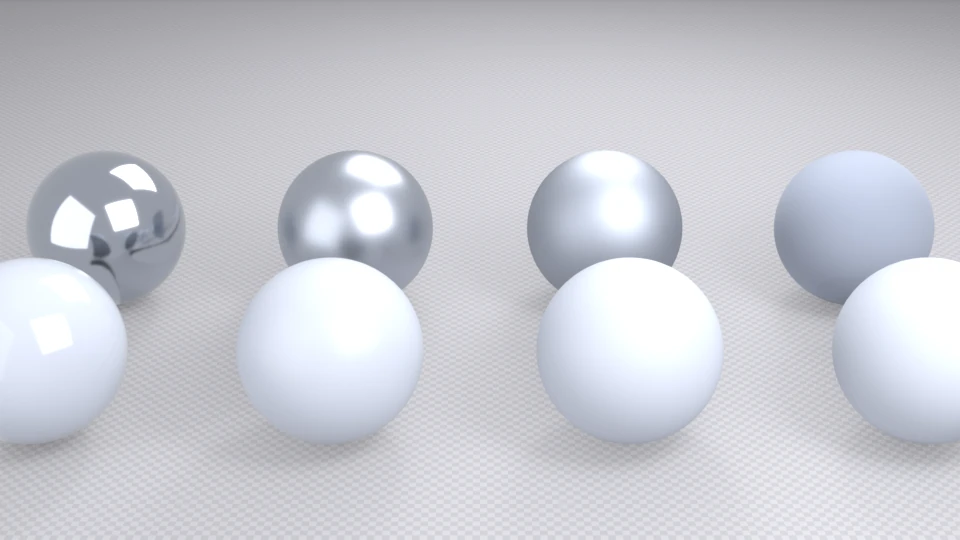
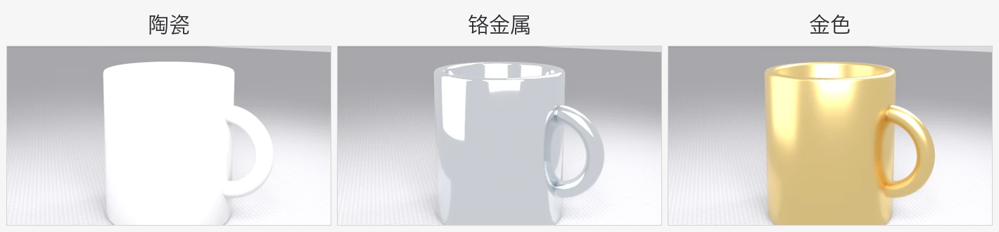
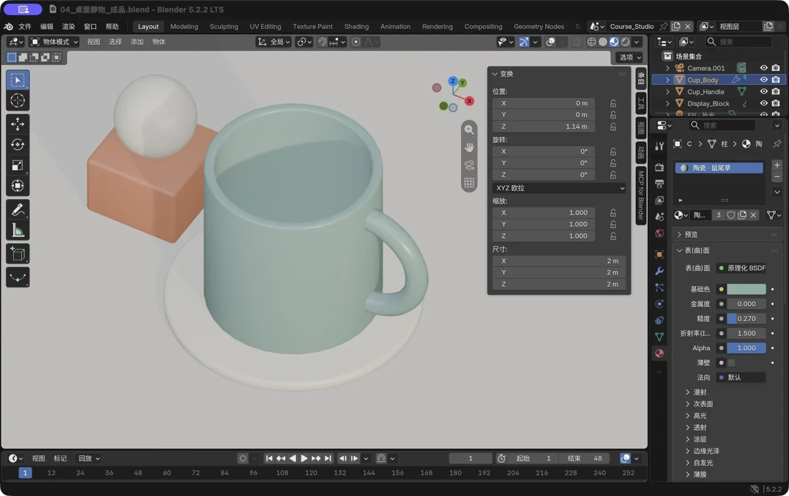
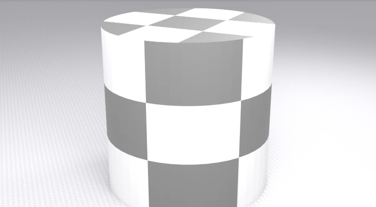
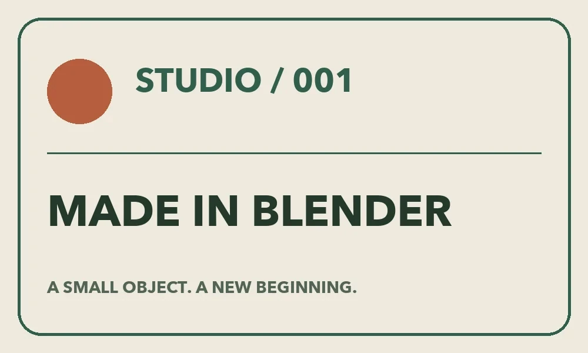
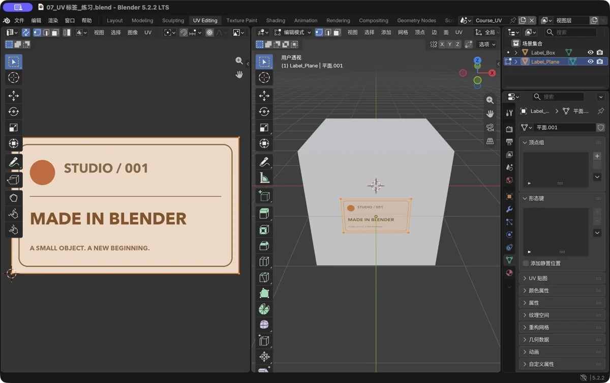
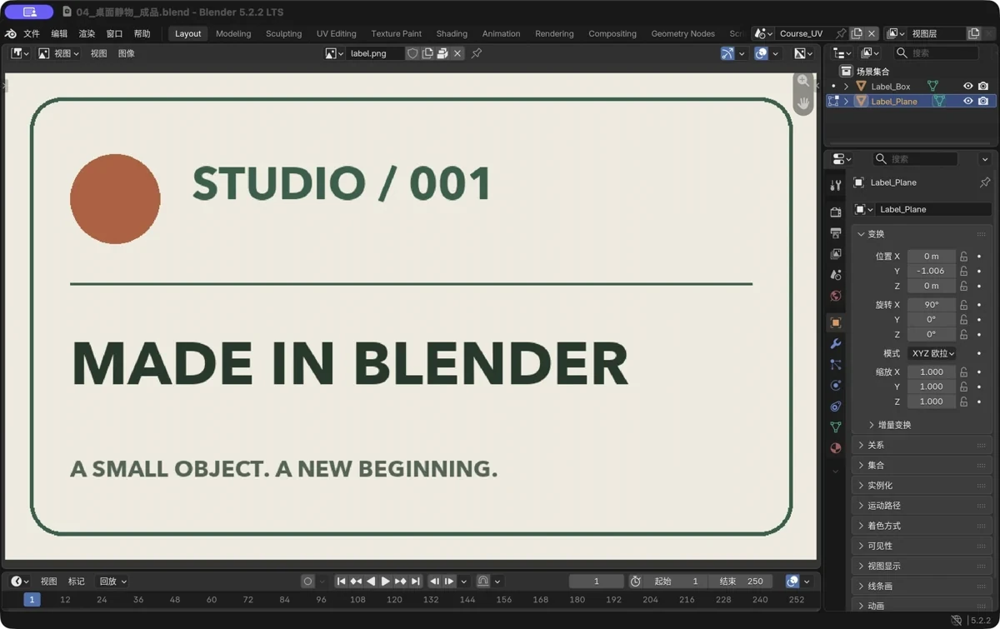

第 6 章 材质与颜色：让模型“有质感”
场景：你的马克杯现在还是一身“白模灰”。这一章教它变成陶瓷、铬金属、还是纯金——材质决定了物体的“贵气”。
学完你会
- 给任意物体新建材质、改颜色；
- 理解三个核心参数：基础色、粗糙度、金属度，并知道它们怎么配合出质感；
- 知道 UV 是什么，会用棋盘格贴图检查 UV 拉伸。
核心概念：材质（Material）就是“表面是什么做的”
外形决定物体长什么样，材质决定它是什么做的。同一个杯子：白瓷、不锈钢、纯金——几何一模一样，材质不同，气质完全不同。
Blender 的材质系统默认使用一个“万能节点”：原理化 BSDF（Principled BSDF）。名字很唬人，其实就三个主滑条最重要：
| 参数 | 含义 | 直觉 |
|---|---|---|
| 基础色 Base Color | 表面固有色 | 油漆的颜色 |
| 粗糙度 Roughness | 0=镜面，1=完全磨砂 | 光滑镜子和毛玻璃的区别 |
| 金属度 Metallic | 0=非金属，1=金属 | 塑料/陶瓷 vs 钢铁 |

图 42 一张图看懂三参数：前排是“非金属”（金属度=0），后排是“金属”（金属度=1）；从左到右粗糙度越来越大。注意金属的“镜面感”和普通的“高光点”完全是两种东西
新手速查表（常用材质的参数配方）：
| 想要的感觉 | 基础色 | 粗糙度 | 金属度 |
|---|---|---|---|
| 白陶瓷 | 灰白色 | 0.2～0.3 | 0 |
| 不锈钢/铬 | 灰白 | 0.05～0.15 | 1 |
| 黄金 | 金黄 | 0.2～0.35 | 1 |
| 木头 | 棕 | 0.6～0.8 | 0 |
| 塑料 | 任意 | 0.4～0.6 | 0 |
跟着做 1：给马克杯换三种材质
先看效果对照——同一只杯子（第 3 章的作品），只改材质参数：

图 43 左到右：陶瓷 / 铬金属 / 金色。差距全在三个滑条上
【跟着做】（以白瓷为例）
- 打开你的马克杯文件（没有的话花 10 分钟按第 3 章做一个，或者用
examples/里的示例）； - 选中杯子 → 右侧属性面板点红色小球图标（材质属性）→ 点“新建（New）”；
- 点开“基础色”色块 → 调成浅灰白（比如 R=0.85, G=0.86, B=0.88）；
- 粗糙度滑到 0.25 左右；金属度保持 0；
- 视口右上角把着色方式切到材质预览（或按
Z选择“材质预览”）——质感立刻可见。
【跟着做】（选做）把这只杯子改成“铬”：基础色拉成浅灰、粗糙度降到 0.05、金属度拉到 1；再改“金”：基础色换成金黄。做完打开渲染预览（Z 菜单里最下面一档）看最终效果。
💡 材质是“物体属性”而不是快捷键操作，所以想养成好习惯：每做一个物件，顺手把它的材质建好并起名（比如 陶瓷_白），别留一堆 Material.001——等场景里 30 个物体时，你会感谢自己。

图 44 真实软件截图：属性面板 → 红色小球图标 → 新建——基础色 / 金属度 / 粗糙度都在这儿
跟着做 2：UV 入门——贴图的“地图”
有些材质不只是纯色，而是要把图“贴”上去（比如照片、木纹、logo）。想把一张平面图画到立体模型表面，就需要一个“摊平坐标”——这就是 UV：
UV = 把 3D 表面像剥橘子皮一样摊平到一张 2D 纸上。 图画在那张纸上，再“包”回模型。摊得不好（拉伸、重叠），贴图就会花。
怎么一眼看出摊得好不好？棋盘格大法：给模型贴一张方格图——

图 45 圆柱贴棋盘格：侧面格子还算方正（好），顶面格子被放射状拉长（拉伸了）
【跟着做】（选做，做了印象更深）
- 新建圆柱体，顶部工作区切到 Shading（着色）；
- 选中圆柱，新建材质后：
Shift+A→ 纹理 → 棋盘格（Checker Texture）； - 用鼠标把棋盘格节点的“颜色”输出，拖到原理化 BSDF 的“基础色”输入上；
- 回到 Layout 工作区，切“材质预览”——观察哪里格子变形了。
再进一步：给盒子贴一张贴纸（小实战）
UV 的完整方法以后慢慢学，但最小的闭环值得现在就体验一次——给一个平面贴上图案：
- 加一个平面（
Shift+A→ 网格 → 平面），放大一点、立起来（RX90），当“贴纸”； - 顶部工作区切到 UV Editing：左边是把表面“摊平”的图纸，右边是 3D 场景；
- 选中平面 →
Tab编辑模式 →A全选 →U→ 展开（Unwrap）：四个角被摊成一块长方形（UV 岛）； - 材质里
Shift+A搜“图像纹理”，打开一张图片（练习素材在examples/文件夹里，叫“贴纸素材.png”），把它的“颜色”接到基础色； - 在左边把 UV 岛拖大、拖正——右边平面上的图案跟着改变位置和大小。

图 46 练习用的贴纸素材——已放在 examples/ 文件夹，直接拿来用

图 47 真实软件截图：UV 编辑器——左边是“摊平的皮 + 贴图”，右边是贴到模型上的效果

图 48 平面展开后是一块方正的 UV 岛，就像把纸盒摊平
三条以后会反复用到的规则，先混个脸熟：
- 缝合边（Seam）：复杂物体的表面不会自己“摊开”，要先在边模式给边做标记（边菜单 → 标记缝合边），告诉软件“从这儿剪开”——像拆纸盒先找剪开线；
- 颜色空间：彩色图片选 sRGB；粗糙度、金属度、法线这类“数据图”选 Non-Color，勾错了画面会发灰发怪；
- 法线贴图要经过“法线贴图（Normal Map）”节点再接进材质，不能直接塞进基础色。
新手常见坑
| 坑 | 说明 | 对策 |
|---|---|---|
| 改了参数没变化 | 没选中物体 / 改的是没挂到物体上的材质 | 确认大纲视图里选中了目标物体 |
| 材质预览挺好看，一渲染就变样 | 预览默认可能用的是自带环境光 | 预览的着色方式里勾选“场景灯光 / 场景世界”，或直接切渲染预览对比 |
| 金属度=1 却黑乎乎的 | 金属靠“反射环境”显形，环境全黑就是黑镜 | 加灯光/提亮世界背景（第 7 章），或先看材质预览 |
| 颜色调成纯黑/纯白 | 现实中几乎没有绝对黑/白 | 用 0.03～0.9 的灰阶范围，耐看得多 |
| 越调越脏 | 一次性改五六个参数 | 每次只动一个滑条，对照看效果 |
| 棋盘格节点找不到 | 节点菜单里没看到 | Shift+A 后直接打字搜索“Checker” |
过关标准
- 我给至少两个物体亲手调过材质（基础色 / 粗糙度 / 金属度）；
- 我知道棋盘格是检查 UV 的“手电筒”，并贴过一次真实图案（哪怕只是平面贴纸）；
- 我能解释“材质预览”和“最终渲染”为什么可能不一样。
自检题
- 想让物体看起来是“磨砂塑料”，三个核心参数大概怎么配？
- 铬与陶瓷的核心区别在哪一个参数上？
- UV 是什么？用一句话解释。
- 棋盘格贴图检查时，格子被拉成长条形说明什么？
- 为什么金属材质在没有环境的纯黑场景里几乎看不见？
答案见文末。
自检题答案
- 基础色随意，粗糙度 0.4～0.6（偏磨砂），金属度 0。
- 金属度：铬是 1（外加低粗糙度），陶瓷是 0。
- 把 3D 表面摊平到 2D 平面上的那套“展开坐标”，贴图靠它贴到模型上。
- 那片区域的 UV 被拉伸了，贴图会变形、发糊。
- 金属的“颜色”几乎全部来自反射环境，没有环境可反射时它就没有东西可显示（近似全黑）。
小结
- 材质 = 表面是什么做的；一个 Principled BSDF 打天下。
- 三核心：基础色（颜色）、粗糙度（光滑↔磨砂）、金属度（0/1 开关）。
- 速记配方：陶瓷 = 灰白 + 0.25 粗糙；金属 = 金属度 1 + 低粗糙度 + 环境光。
- UV = 表面摊平坐标；棋盘格是检验 UV 的手电筒。
- 起名强迫症是美德：
陶瓷_白好过Material.023。